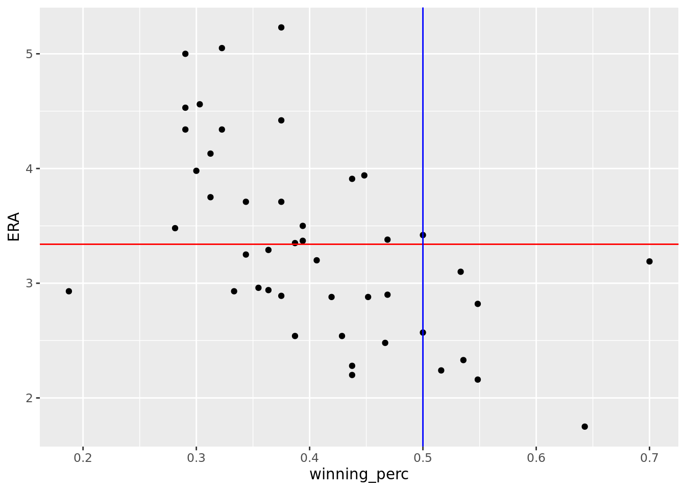

astros_2022 <-team_results_bref(Tm ="Houston Astros", year =2022) #this data doesn't include the postseason #https://www.fangraphs.com/teams/astros/stats - I was thinking that we could try to scrape#the data from here which is the starting pitcher stats for the Astros and then create plots#using these statistics plotted against results for each pitcher to determine which stats seem#to be better predictors of winning. I wasn't able to scrape in the data but I do think that it #can be done. #| label: number-of-wins-by-pitcherastros_2022 |>filter(Result ==c("W", "W-wo")) |>select(Win) |>group_by(Win) |>count(Win) |>arrange(desc(n))
::: {.cell}
```{.r .cell-code}
#scraping data for pitcher time logs
astros_pitchers <-
daily_pitcher_bref("2022-04-07", "2022-10-05") |>
filter(Team == "Houston")
:::
From the plots above which count the number of wins and losses per pitcher, I selected the top 4 pitchers based on their number of wins and the bottom 3 based on their number of losses.
astros_starters <-astros_pitchers |>filter(GS !=0)astros_relievers <-astros_pitchers |>filter(GS ==0)#| label: most losses as a starter vs most wins as a starterastros_starters |>select(Name, W) |>arrange(desc(W))
── MLB Daily Pitcher data from baseball-reference.com ─────── baseballr 1.3.0 ──
ℹ Data updated: 2022-11-28 22:16:30 EST
# A tibble: 7 × 2
Name W
<chr> <dbl>
1 Justin Verlander 18
2 Framber Valdez 17
3 Luis Garcia 15
4 Jose Urquidy 13
5 Cristian Javier 11
6 Lance McCullers Jr. 4
7 Hunter Brown 2
── MLB Daily Pitcher data from baseball-reference.com ─────── baseballr 1.3.0 ──
ℹ Data updated: 2022-11-28 22:16:30 EST
# A tibble: 13 × 2
Name W
<chr> <dbl>
1 Hector Neris 6
2 Rafael Montero 5
3 Bryan Abreu 4
4 Ryan Pressly 3
5 Ryne Stanek 2
6 Seth Martinez 1
7 Blake Taylor 1
8 Phil Maton NA
9 Brandon Bielak NA
10 Parker Mushinski NA
11 Ronel Blanco NA
12 Enoli Paredes NA
13 Pedro Baez NA
Pulling out the pitchers with the most wins, we see that Justin Verlander has the most wins for starters and Hector Neris has the most wins for relievers.
Let’s compare some of their stats to those of the other pitchers.
#this is creating smaller plots to just look at trends for astros' starters#we can obviously create more looking at relievers and different relationshipsggplot(astros_starters,aes(x = ERA, y = Str, color = W)) +geom_point()
ggplot(astros_starters,aes(x = W, y = StL, color = Name)) +geom_point()
ggplot(astros_starters,aes(x = W, y = SO_perc, color = Name)) +geom_point()
#I think it is better to use the entire dataset so we can gather whether different statistics are better predictorspitchers_2022 <-fg_pitch_leaders(x=2022, y=2022)#mutate a column for the winning percentage based on games playedpitchers_2022 <-pitchers_2022 |>mutate(winning_perc = W/G) |>mutate(K = Strikes/Pitches)#calculating mean ERAmean_ERA <-pitchers_2022 |>select(ERA) |>summarize(mean =mean(ERA))#plotting ERA vs win percentageggplot(pitchers_2022,aes(x = winning_perc, y = ERA)) +geom_point() +geom_hline(yintercept =3.34, color ="red") +geom_vline(xintercept =0.5, color ="blue")

From the plot above we can then zero in on the points that lie in the bottom right quadrant because these pitches are performing above average in regards to ERA and win_percentage. To see those who are underperforming we can look at the top left quadrant.
above_era_winpc <-pitchers_2022 |>filter(winning_perc >0.5& ERA <3.34)below_era_winpc <-pitchers_2022 |>filter(winning_perc <=0.5& ERA >=3.34)
After these datasets have been created, we can now look more closely into other statistics that impact winning_percentage and ERA.
From here we can look at other means and correlations that might be statistically significant.
#creating a line of best fit for the winning_perc vs ERA graphggplot(pitchers_2022,aes(x = winning_perc, y = ERA)) +geom_point() +geom_hline(yintercept =3.34, color ="red") +geom_vline(xintercept =0.5, color ="blue") +geom_smooth(method = lm, se =FALSE)
`geom_smooth()` using formula = 'y ~ x'
#loading in tidy modelslibrary(tidymodels)#looking at the R-squared of the linear modelwin_ERA_model <-linear_reg() |>set_engine("lm") |>fit(winning_perc ~ ERA, data = pitchers_2022)tidy(win_ERA_model)
# A tibble: 2 × 5
term estimate std.error statistic p.value
<chr> <dbl> <dbl> <dbl> <dbl>
1 (Intercept) 0.635 0.0522 12.1 1.72e-15
2 ERA -0.0684 0.0152 -4.50 5.04e- 5
glance(win_ERA_model)$r.squared
[1] 0.3205449
Since the r squared value is not very large, it doesn’t seem as though ERA is a great predictor of winning_percentage. We can look at other statistics such as WHIP.
#creating a line of best fit for the winning_perc vs WHIP graphggplot(pitchers_2022,aes(y = winning_perc, x = WHIP)) +geom_point() +geom_smooth(method = lm, se =FALSE)
`geom_smooth()` using formula = 'y ~ x'
#looking at the R-squared of the linear modelwin_WHIP_model <-linear_reg() |>set_engine("lm") |>fit(winning_perc ~ WHIP, data = pitchers_2022)tidy(win_WHIP_model)
Looking at this model it appears as though WHIP is an even poorer measure of winning_percentage. I am going to look at the relation between WHIP and ERA just for fun.
#creating a line of best fit for the ERA vs WHIP graphggplot(pitchers_2022,aes(y = ERA, x = WHIP)) +geom_point() +geom_smooth(method = lm, se =FALSE)
`geom_smooth()` using formula = 'y ~ x'
#looking at the R-squared of the linear modelERA_WHIP_model <-linear_reg() |>set_engine("lm") |>fit(ERA ~ WHIP, data = pitchers_2022)tidy(ERA_WHIP_model)